Transport
Ray tracing, a drift-corrected random walk, settling in water of variable density and viscosity, bed exchange, beaching and washout.
Microplastic transport · Research companion
University of Ottawa · National Research Council Canada · Kyushu University
Following microplastics through the water column as biofilm growth and fragmentation change their size, density and fate.
Results from the current manuscript. Publication and DOI details will be added when available.
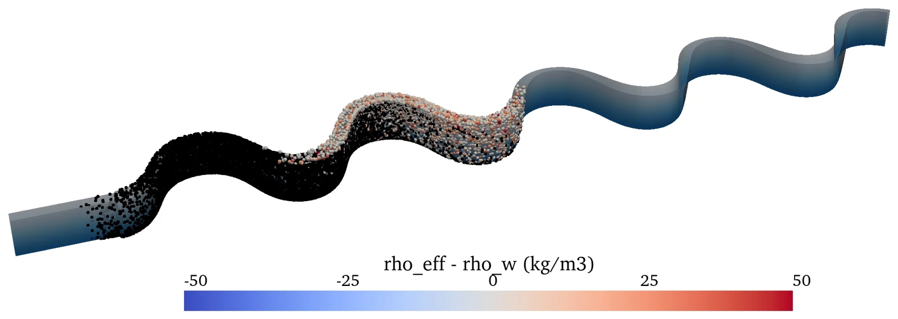
Meandering river · Biofilm growth + fragmentation · Day 101 / The numerical model
The solver traces particles through an unstructured triangular prism mesh using a prescribed three-dimensional hydrodynamic field. Transport and transformation are calculated on the GPU, with one thread for each particle.
Ray tracing, a drift-corrected random walk, settling in water of variable density and viscosity, bed exchange, beaching and washout.
The growth of attached algae changes the effective size and density of each particle, and therefore its settling velocity.
Weighted computational particles represent increasing numbers of smaller fragments while conserving the represented mass and keeping the computational particle count constant.
02 / Simulation films
These animations show numerical results for a synthetic 20 km meandering river with variable depth and helical secondary flow. Compare transport alone, biofilm growth, fragmentation and both processes together.
Download MP4: 3D (7.9 MB) · Plan (12.7 MB) · Side (25.6 MB)
The channel is 200 m wide, with a discharge of 70 m³/s. Each run releases 10,000 spheres per diameter class (0.1, 0.3 and 1 mm), initially at 950 kg/m³. The simulations cover three days with a 600 s time step and particle output every 20 minutes. Biofilm growth uses 2 × 10¹⁰ cells/m³ under a day–night light cycle; fragmentation uses k₀ = 10⁻⁵ s⁻¹.
The flow field is synthetic. These results illustrate the modelled processes in a controlled river configuration; they are not field observations.
03 / Results
Of the initially 1 mm spheres settle within three days with both processes, compared with biofilm growth alone, in the meandering-river test.
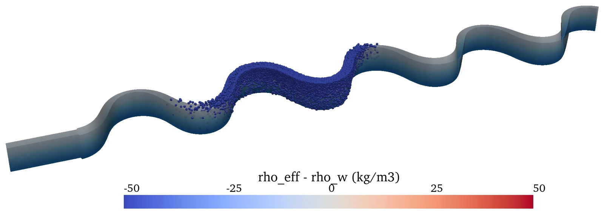
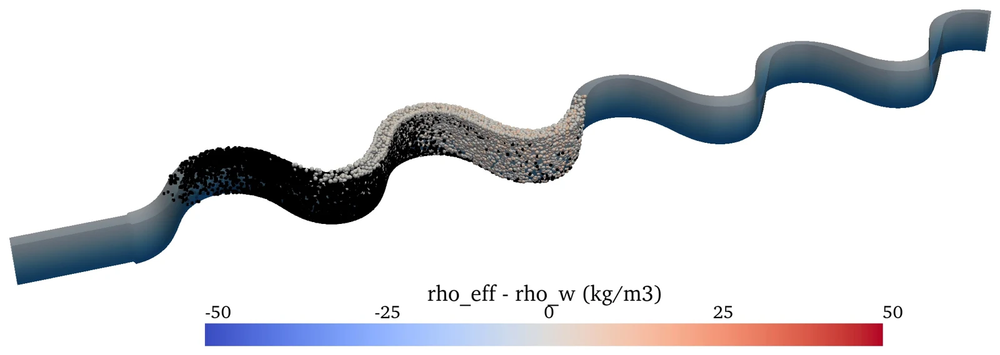
Biofilm growth determines whether the initially buoyant particles leave the water column. Fragmentation alone reduces their size while they remain buoyant; together, the two processes increase deposition of the largest particles.
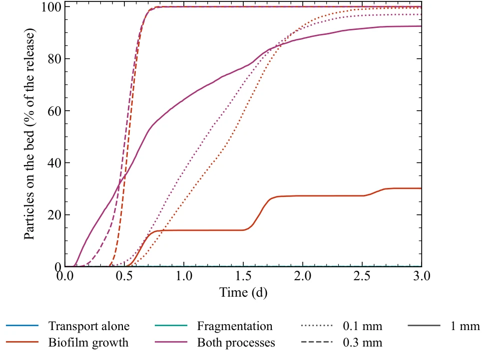
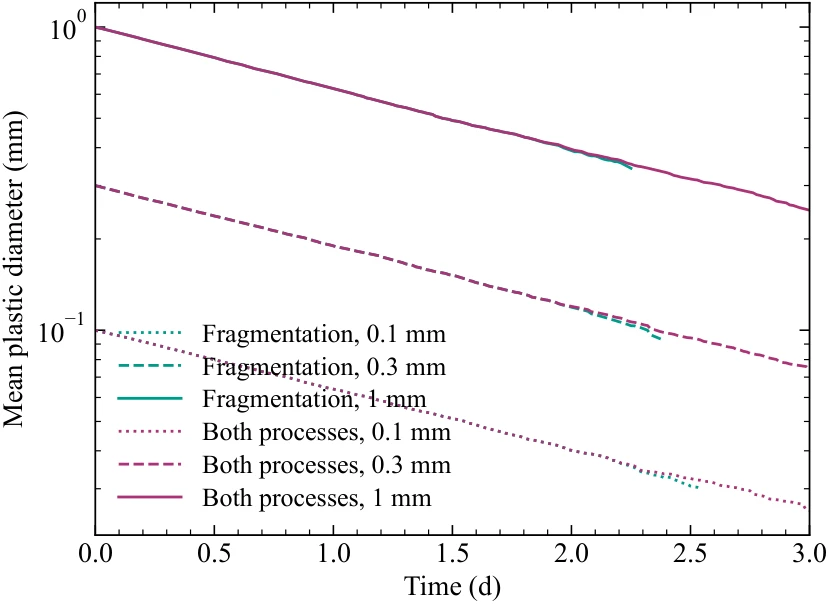
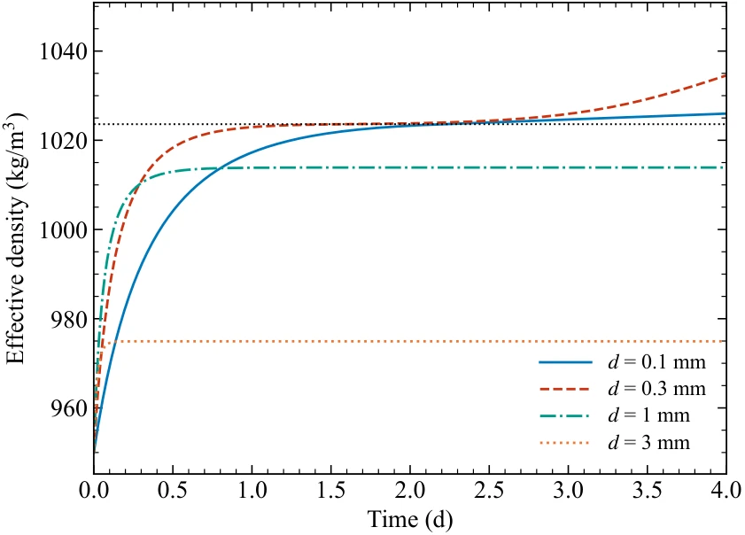
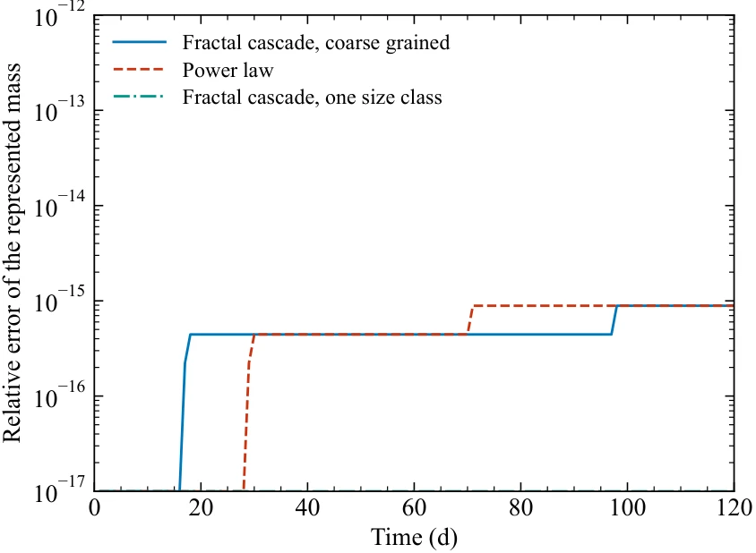
The model was compared with microplastic-sphere transport and deposition measurements in a flume. The manuscript reports settling velocities within 2% of the measurements. Trap efficiency is over-predicted for a 7 cm pit at 0.5 m/s, identifying re-entrainment height as a limitation requiring further development.
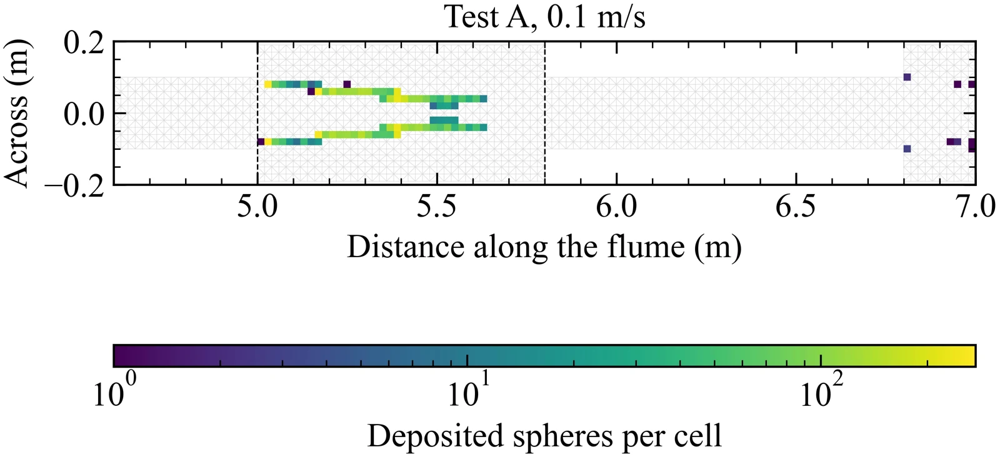
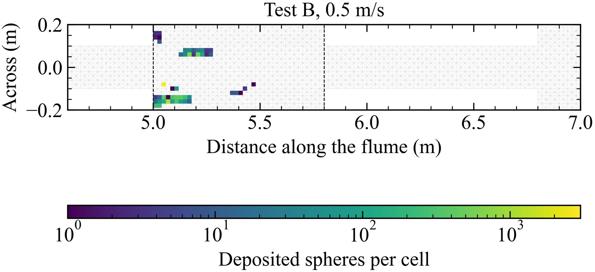
04 / Computational performance
Benchmarks used an NVIDIA GeForce RTX 3080 (10 GB) and an AMD Ryzen 9 5900X (12 cores, 24 threads). Timings exclude the first step, compilation, allocation and output. The 0.049 s result applies to the tidal test, where the speedup over 24 CPU threads is 38×; runtime and speedup depend on the mesh, precision and particle count.
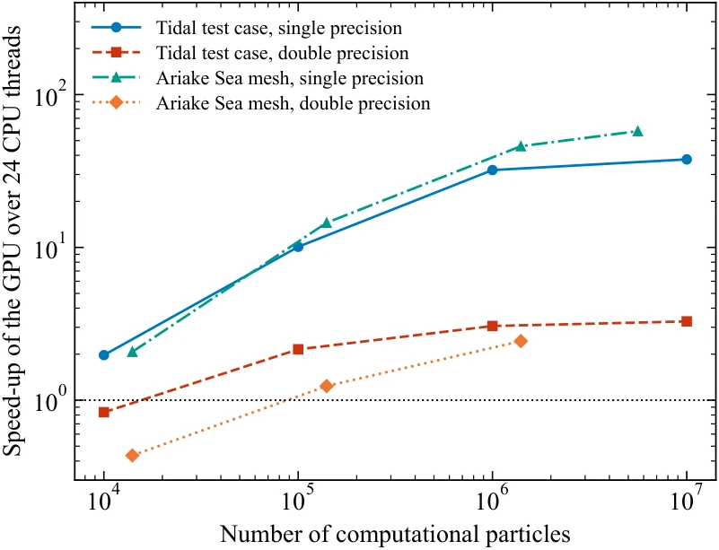
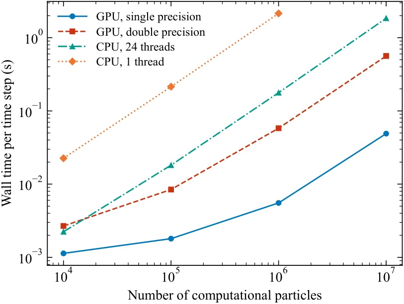
05 / Further exploration
Explore the original interactive river-to-lake visualization. It is a schematic outreach demonstration with simplified processes.
Open Microplastic Journey →A separate project on force-based particle tracking in open-channel flows, including vegetation and OpenFOAM hydrodynamics.
Related repository ↗For manuscript details and access to the numerical model, contact Danial Goodarzi.
dgood006@uottawa.ca